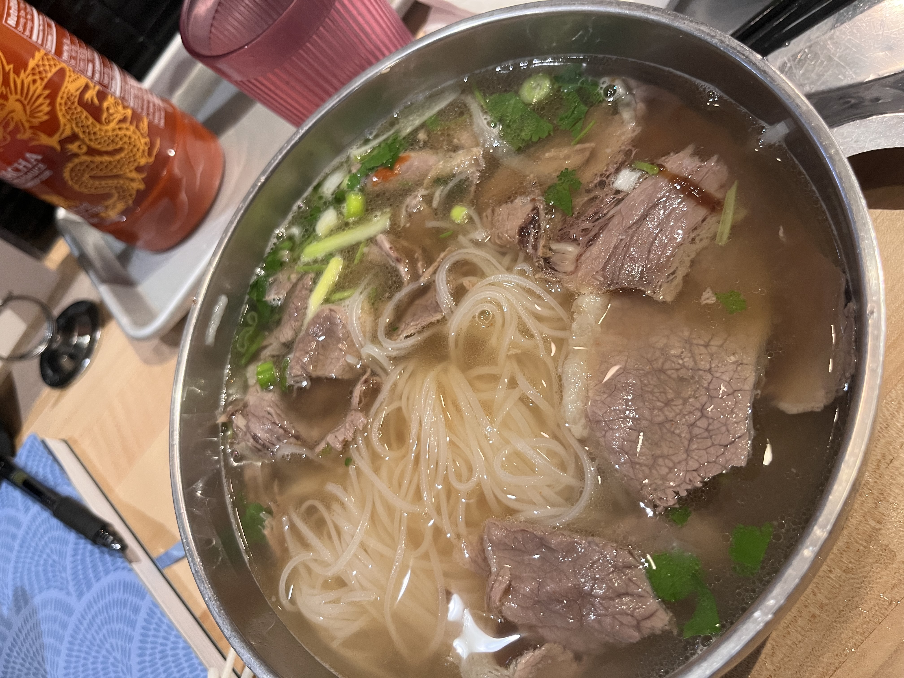
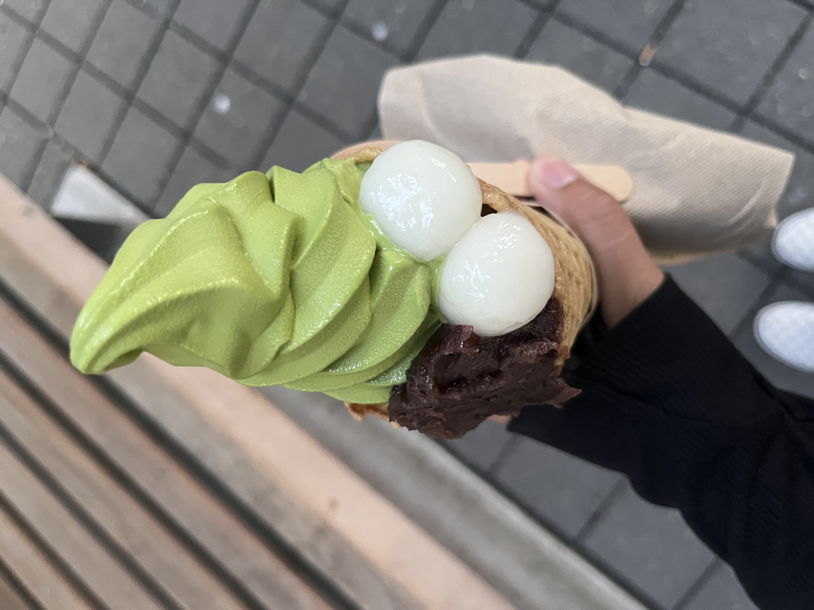
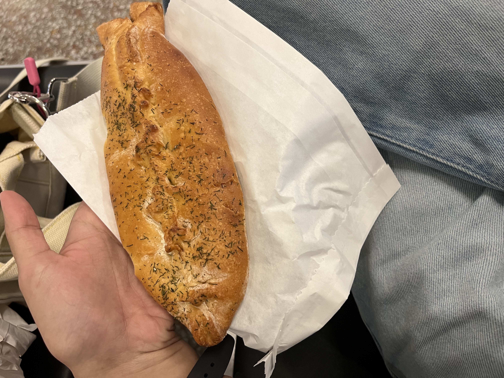
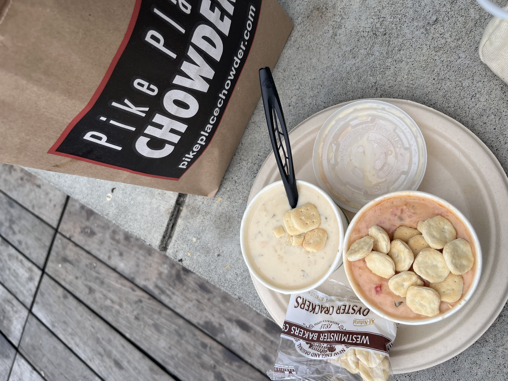

1. Pho Bac
Pho Bac is renowned for its authentic Vietnamese pho. The rich broth and fresh ingredients make it a must-visit for noodle lovers!
2. Nana's Green Tea
Nana's Green Tea offers a delightful selection of Japanese desserts, including their famous matcha soft serve, perfect for a sweet treat!
3. Piroshky Piroshky
Piroshky Piroshky is famous for its delicious Russian pastries. Each pastry is freshly baked and filled with a variety of savory and sweet options.
4. Pike Place Chowder
Pike Place Chowder is an award-winning spot known for its creamy clam chowder. It's a perfect bowl of comfort food to warm you up!